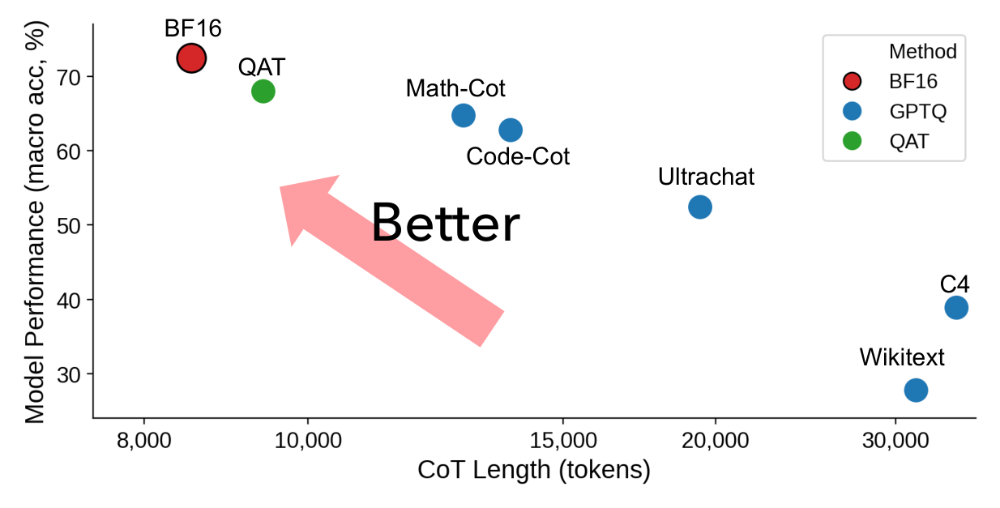
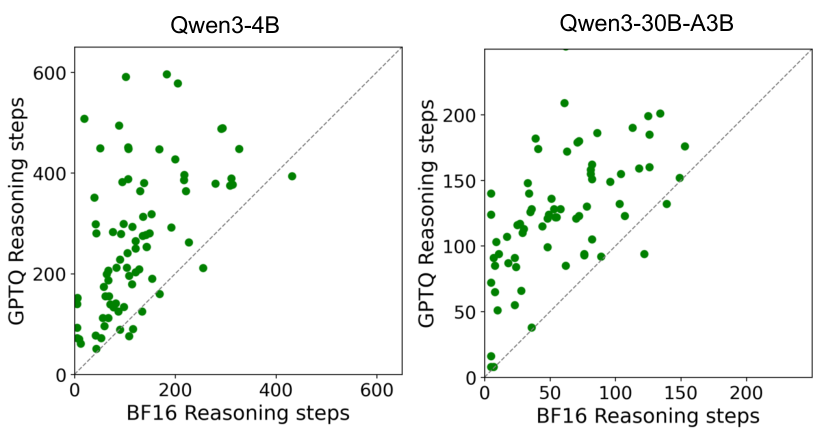

Give a hiker a slightly blurry map and a lighter backpack. Each step is quicker, and they still reach the same summit, but they keep stopping to re-read signs and retrace paths. The detours can cost more time than the lighter pack saved.
등산객에게 살짝 흐린 지도와 더 가벼운 배낭을 줬다고 하자. 한 걸음은 빨라지고 같은 정상에 도착하지만, 표지판을 다시 읽고 왔던 길을 되짚느라 자주 멈춘다. 이 우회가 가벼운 배낭으로 아낀 시간보다 더 클 수 있다.
The paper in one figure한 장으로 보는 논문
Quantization pushes a model right (longer) and down (less accurate). Calibrating on reasoning traces wins back most accuracy; only QAT (quantization-aware training) nearly returns to BF16.
양자화는 모델을 오른쪽(더 길게)과 아래(덜 정확하게)로 민다. 추론 흔적으로 보정하면 정확도를 대부분 되찾고, QAT(양자화 인식 학습)만 BF16 근처로 돌아온다.

- Quantize and decode greedily.양자화하고 탐욕적으로 생성한다.Three reasoning models, five PTQ methods at INT4/INT3, temperature 0 on math, code, science and tool-use tasks.추론 모델 3개, PTQ 5종(INT4/INT3), 온도 0으로 수학·코드·과학·도구 사용 과제를 푼다.
- Count thinking, not just answers.답뿐 아니라 생각을 센다.CTIR compares CoT length to BF16; step counts and embedding-based repetition show where extra tokens go.CTIR로 CoT 길이를 BF16과 비교하고, 단계 수와 임베딩 기반 반복도로 늘어난 토큰의 정체를 본다.
- Price it, then try fixes.비용을 재고, 해결책을 시험한다.Measure latency and throughput in vLLM, then compare decoding penalties, prompts, calibration data and QAT.vLLM에서 지연과 처리량을 재고, 디코딩 페널티·프롬프트·보정 데이터·QAT를 비교한다.
Same answers, many more tokens같은 답, 훨씬 많은 토큰
Inflation grows as bits drop and as models shrink. The 4B model's worst INT3 settings nearly quadruple its reasoning; the 30B model is sturdier but never immune.
비트가 줄수록, 모델이 작을수록 팽창이 커진다. 4B 모델의 최악 INT3 설정은 추론을 거의 4배로 늘리고, 30B 모델은 더 튼튼하지만 면역은 아니다.
Accuracy barely moves while length climbs. An accuracy-only report would call the GPTQ rows lossless.
정확도는 거의 그대로인데 길이는 오른다. 정확도만 보면 GPTQ 행들은 손실이 없다고 판정된다.
| Model · setting모델 · 설정 | Avg-R | CTIR |
|---|---|---|
| 4B INT4 GPTQ | 72.5 → 71.6 | +12.0% |
| 4B INT4 AWQ | 72.5 → 73.2 | +8.2% |
| 4B INT3 HQQ | 72.5 → 55.4 | +292.1% |
| 30B INT4 GPTQ | 74.8 → 74.6 | +3.7% |
| 30B INT3 GPTQ | 74.8 → 74.7 | +19.0% |
| 30B INT3 HQQ | 74.8 → 64.4 | +60.1% |
Where the extra tokens go늘어난 토큰은 어디로 가나
Quantized models take more steps, and more of them repeat earlier steps. Traces fill with "wait", "let me verify" and retries, without better answers.
양자화 모델은 단계가 더 많고, 그중 앞 단계를 되풀이하는 비율도 높다. "wait", "let me verify", 재시도가 늘지만 답은 나아지지 않는다.

The bill, and which fixes work청구서, 그리고 통하는 해결책
Small inflation already hurts serving; only retraining fixes both length and accuracy. Concise prompts shorten traces but cost 5–11 accuracy points at INT3; repetition penalties trade accuracy too.
작은 팽창도 서빙을 해치고, 길이와 정확도를 함께 고치는 건 재학습뿐이다. 간결 프롬프트는 추론을 줄이지만 INT3에서 정확도를 5–11점 깎고, 반복 페널티도 정확도를 내준다.
When you compress a reasoning model, log reasoning length next to accuracy, and calibrate on the model's own reasoning traces. Matching the full-precision model's trajectory, not only its final answer, is what keeps the small model cheap.추론 모델을 압축할 때는 정확도 옆에 추론 길이를 함께 기록하고, 모델 자신의 추론 흔적으로 보정하자. 최종 답만이 아니라 원본의 궤적을 맞춰야 작은 모델이 실제로 싸진다.
Each benchmark uses only 100 questions (AIME25: 30) with one greedy run, and the QAT result is a single DiscQuant point on one model. The serving test sets the CoT budget by hand rather than timing real quantized models.벤치마크마다 100문항(AIME25는 30문항)에 탐욕적 1회 실행뿐이고, QAT 결과는 한 모델의 DiscQuant 한 점이다. 서빙 실험은 실제 양자화 모델을 잰 게 아니라 CoT 예산을 고정해 측정했다.